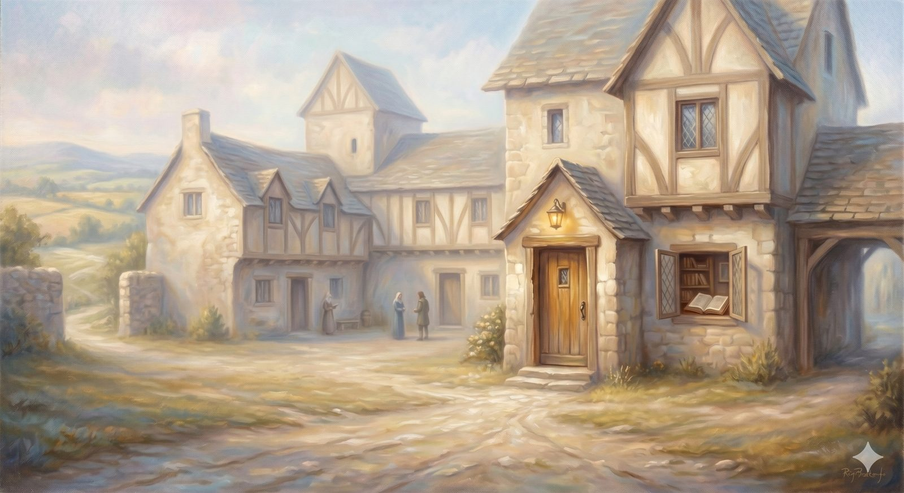

The Interpreter's House
The room where faith turns up the lights — the evidence, the empty tomb, and learning to see.
"If Christ has not been raised, your faith is futile and you are still in your sins." 1 Corinthians 15:17 (ESV)
Just past the gate, the road brings the pilgrim to a large house, where a man called the Interpreter takes him in by candlelight and shows him room after room of things worth seeing — emblems and pictures that prepare him for the journey ahead. Christian does not stay long. But he leaves seeing more clearly than he came.
That is exactly the purpose of this stop. You have come through the gate; you have decided to trust enough to walk in. Now the Interpreter does something faith does not fear: he turns up the lights and lets you look. This room is for the evidence — for the honest question, is there anything actually here to see? — and the answer is yes, more than most people have been told.
📖 The Scripture behind this Entailedwhat’s this?›
The claim: Genuine faith does not fear honest examination; God invites scrutiny of his claims rather than demanding blind assent.
- 1 Thessalonians 5:21 (ESV) — “but test everything; hold fast what is good.”Believers are commanded to test, not to accept uncritically.
- Acts 17:11 (ESV) — “they received the word with all eagerness, examining the Scriptures daily to see if these things were so.”The Bereans are commended precisely for checking the claims against the evidence.
- Isaiah 1:18 (ESV) — “Come now, let us reason together, says the LORD.”God invites reasoned engagement, not the switching-off of the mind.
Drawn from comparing several texts; the inference is shown rather than rested on one proof-text.
Part OneA record you can examine
Start with the strange fact that Christianity makes testable claims at all. Much of it is rooted in history — in events that either happened or did not, in documents that can be weighed like any other.
Consider the long-range claims. Seven centuries before the crucifixion, the prophet Isaiah described a figure who would be pierced for the transgressions of others, despised and rejected, making himself an offering for guilt, and vindicated after his death. This was not a reading the church invented after the fact and read back into an old text — fragments from Qumran and early Aramaic paraphrases show that some within Judaism were already reading such passages as pointing toward a coming anointed one. And consider the documents themselves: the New Testament comes down to us in more manuscripts, closer to the events, than any other work of the ancient world by a wide margin. You do not have to find this decisive to find it serious. It is the kind of thing an honest mind can pick up and turn over in the light.
Then the Interpreter shows his guest a stranger exhibit — one easy to walk past. Look, he says, at how unflattering this record is. Founding documents almost always polish their heroes; this one does the opposite, with startling consistency. Abraham, the father of faith, lies about his wife to save his own skin — twice. Moses loses his temper and is barred from the land he spent his life walking toward. David, the man after God's own heart, abuses his power and arranges a man's death to cover it. Peter, the rock the church is built on, swears he never knew Jesus. The inner circle bicker about which of them is greatest on the last night of their teacher's life. The first witnesses to the resurrection are women, in a culture that would not count their testimony in court — and the writers name them anyway, instead of quietly swapping in someone more convenient. A movement managing its own image edits these stories out. This one left them in. That is not how you write propaganda; it is how you write what actually happened.
Part TwoThe exhibit at the center: an empty tomb
But the Interpreter saves the central exhibit for the middle of the house, because everything else in Christianity leans on it. If Christ has not been raised, Paul wrote, with startling nerve, your faith is futile. He staked the whole thing on a single event in the world and dared people to investigate it.
📖 The Scripture behind this Directwhat’s this?›
The claim: The entire Christian faith stands or falls on one historical event — the bodily resurrection of Jesus. If it did not happen, the faith is empty.
- 1 Corinthians 15:14, 17 (ESV) — “And if Christ has not been raised, then our preaching is in vain and your faith is in vain. … you are still in your sins.”Paul stakes the whole faith on the resurrection as a real event — if false, all is futile.
A single, decisive text states the claim; no supplement is needed.
There is a great deal that needs explaining: a tomb that was empty when enemies had every reason to produce the body and could not; followers who scattered in fear and then, within weeks, were proclaiming a risen Lord in the very city where he had been executed; people who went to their deaths insisting they had seen him — not for a cause they believed, but for an event they claimed to have witnessed with their own eyes. People die for convictions all the time. It is a rarer thing to die for a fact you would know you had made up.
In plain terms
The resurrection is not offered as a feeling or a metaphor. It is offered as something that happened, in a particular place, that left evidence behind — an empty grave, transformed cowards, witnesses who would not recant under threat of death.
You are not asked to accept it with your eyes shut. You are invited to ask the ordinary historian's question: what explanation actually accounts for all of it?
The rooms of this house
The Examined Record
Can the book be trusted? Prophecy written too early, the manuscript trail, and a record that will not flatter its heroes.
Open nowThe Empty Tomb
The one load-bearing fact, weighed as a historian would weigh it — the empty tomb, the witnesses, and the best explanation.
Open nowPart ThreeWhat kind of universe, then?
If it happened, it is not merely a fact about Jesus. It is a fact about the universe — and it reaches all the way back to the City of Destruction, to those broken cisterns and the ache of good things that never lasted. Because if the tomb is empty, then death is not the final word, and the brokenness we felt so keenly is not permanent.
Paul calls the resurrection the firstfruits — a harvest word, meaning the first installment of a much larger yield. Jesus rising is not a lone exception to the way the world works; it is the first piece of the way the world is going to work. Which means every longing for something permanent, every grief at loss, every sense that beauty ought to last longer than it does — these were not illusions to be outgrown. They were accurate readings, taken by a creature made for a world that has begun, in one empty tomb, to arrive.
📖 The Scripture behind this Directwhat’s this?›
The claim: Christ’s resurrection is the ‘firstfruits’ — not a lone exception to how the world works, but the first installment of a coming resurrection harvest, which is why it reaches back to redeem every broken thing.
- 1 Corinthians 15:20 (ESV) — “But in fact Christ has been raised from the dead, the firstfruits of those who have fallen asleep.”‘Firstfruits’ is a harvest word: the first sheaf guaranteeing the rest of the crop.
- Romans 8:11 (ESV) — “He who raised Christ Jesus from the dead will also give life to your mortal bodies through his Spirit.”Christ’s resurrection is explicitly the pattern and pledge of the believer’s own.
The harvest metaphor in the text itself carries the claim; supported by Romans 8:11.
Every grief at loss was an accurate reading of a world made for resurrection — and still waiting for it.
One last thing the Interpreter is careful to say before the lights go down, because it is easy to leave a room like this with the wrong impression — that the goal is to conclude the resurrection, to reason your way to a verdict and file it. But the risen Christ is not a conclusion to be reached. He is a person to be met. The two disciples on the road to Emmaus did not deduce him from the evidence; they walked beside him and knew him in the breaking of bread. Thomas did not argue himself into faith; he met the one he had doubted, and the meeting was the answer. The evidence is real, and it clears the ground — but it was always meant to bring you to a Person, not to replace him. This is why the fountain from the City is still flowing: the spring we walked away from is not sealed by death, because the One at its source is alive, and can be known the way the living are known.
The Interpreter does not keep his guests forever. The lights go down; the road resumes. You leave this house not with every question closed, but seeing more than you did — enough to keep walking toward the one place the whole road has been bending toward. Because the next thing the pilgrim sees, after all the evidence has been weighed, is not another argument. It is a cross on a hill, and a burden about to fall.